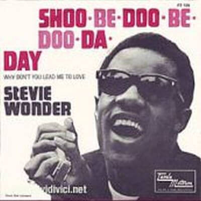

Video

Letra
Your precious sweetheart,
She's so faithful,
She's so true, oh yeah,
Her dreams are tumblin',
Her world is crumblin'
Because of you, uhh uh.
One day you'll hurt her
Just once too much,
And when you finally
Lose your tender touch, hey, hey,
Shoo-Be-Doo-Be-Doo-Be-Doo-Da-Day
Her feet may wander,
Her heart may stray, oh yeah,
Shoo-Be-Doo-Be-Doo-Be-Doo-Da-Dee.
You gonna send your baby straight to me,
I'm gonna give her
All the lovin' within my heart, oh yeah,
I'm gonna patch up
Every single little dream you tore apart,
Understand me?
And when she tells you she's cried her last tear,
Heaven knows I'm gonna be somewhere near, oh yeah,
Shoo-Be-Doo-Be-Doo-Be-Doo-Da-Day
Her feet may wander,
Her heart may stray, baby,
Shoo-Be-Doo-Be-Doo-Be-Doo-Da-Dee.
Love's gon' send your baby straight to me,
Yeah, hum, yeah,
You'd better listen to me, yeah, yeah.
Heartaches are callin' tears are fallin'
Because of you, hey, yeah,
And when you're gone she'll know
I'm the one to go to her rescue
Baby you didn't know that thing.
You're gonna leave her once too many times
And when you come back
That girl's gonna be mine, all mine, hey, hey.
Shoo-Be-Doo-Be-Doo-Be-Doo-Da-Day
Her feet may wander,
Her heart may stray, yeah, yeah
Shoo-Be-Doo-Be-Doo-Be-Doo-Da-Dee.
Love's gon' send your baby straight to me, hey, hey.